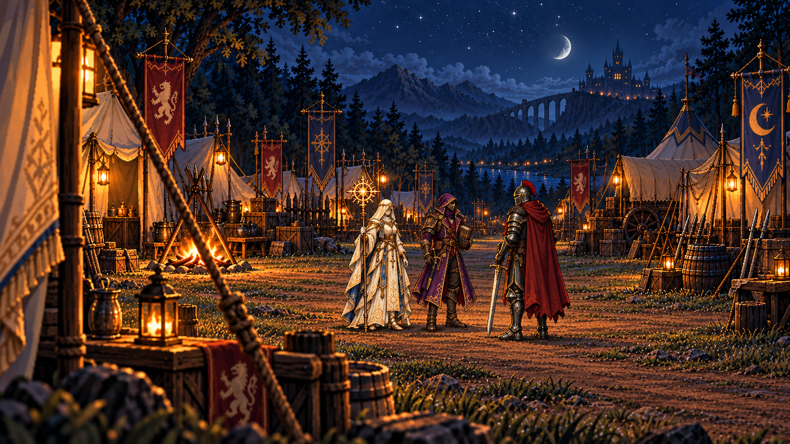

RPGThreeJS · Étude de mise en scène
Avant le départ
Cinq illustrations, un même moment dans le camp.

01 / 05
Le camp, avant le départ
Très large · le lieu
Chargement des cinq illustrations…
Réduction des mouvements active. Vous pouvez parcourir les plans avec les flèches ; la lecture démarre uniquement sur demande.